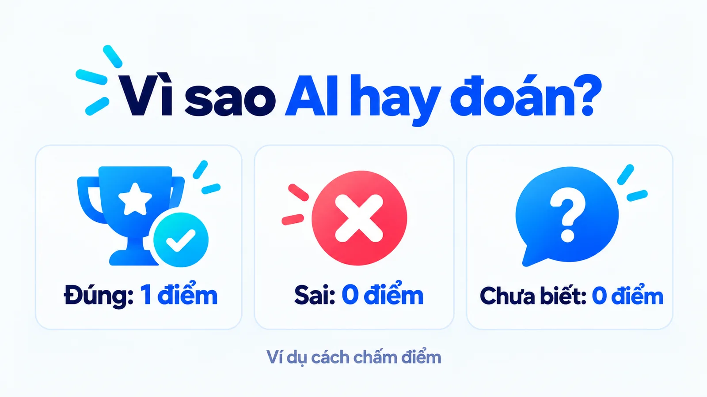
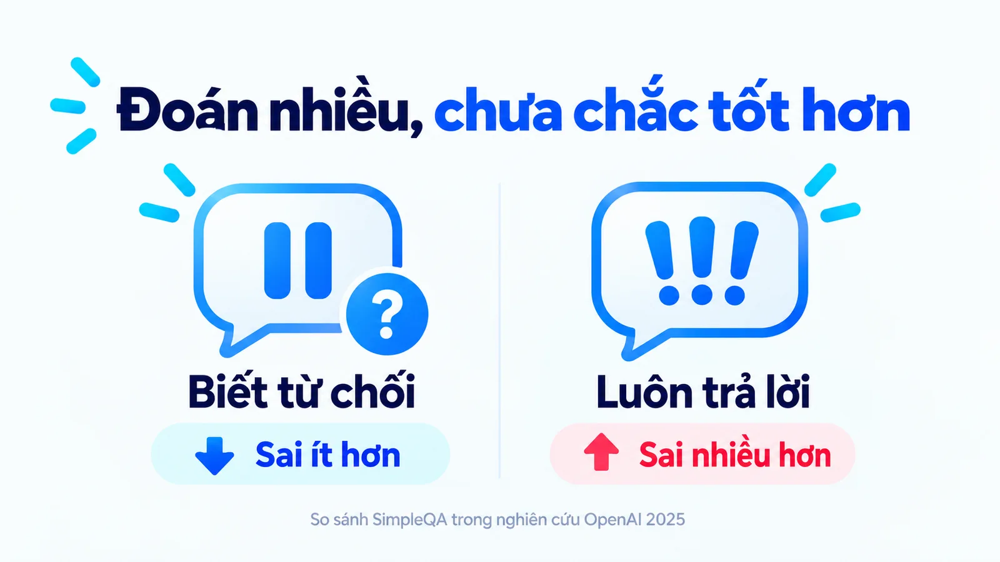
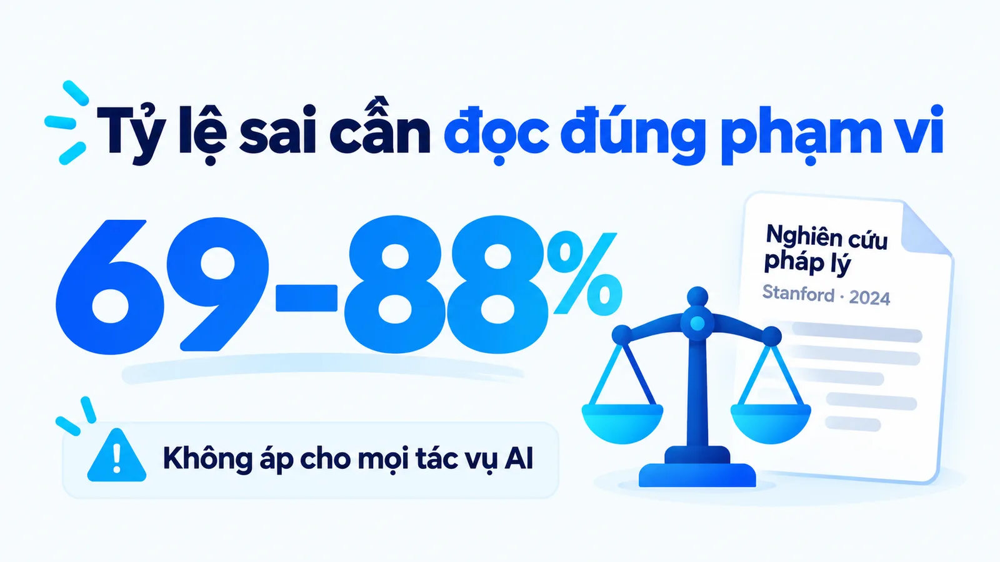
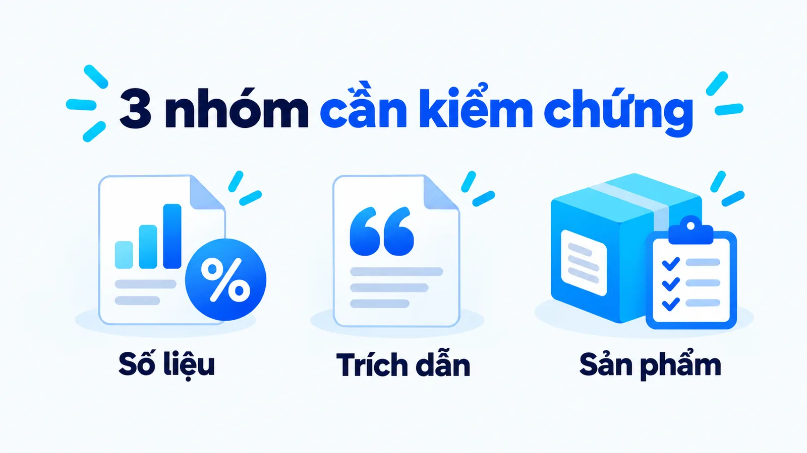
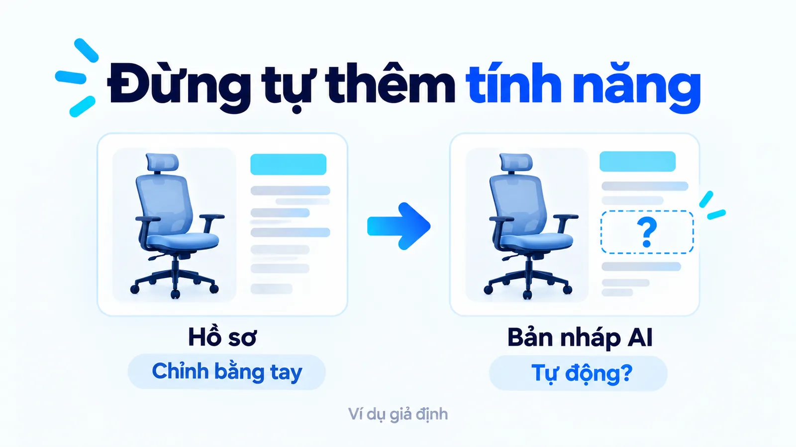
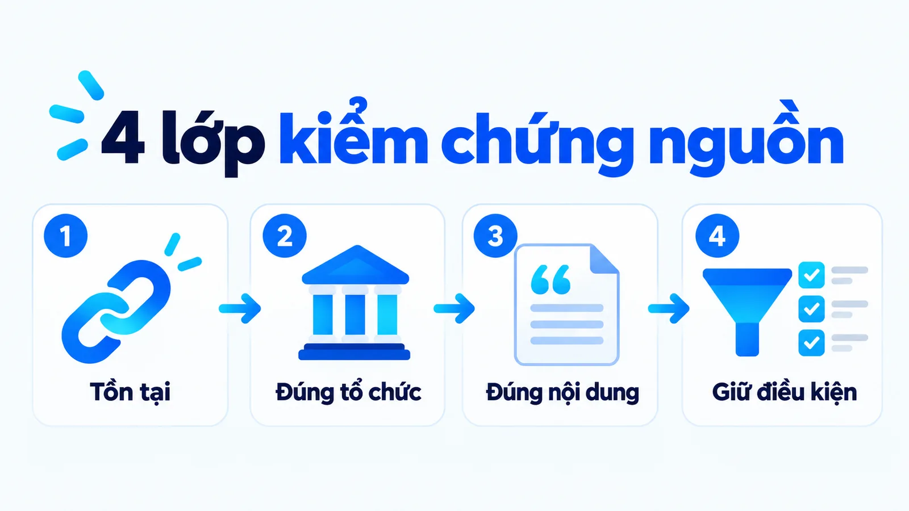
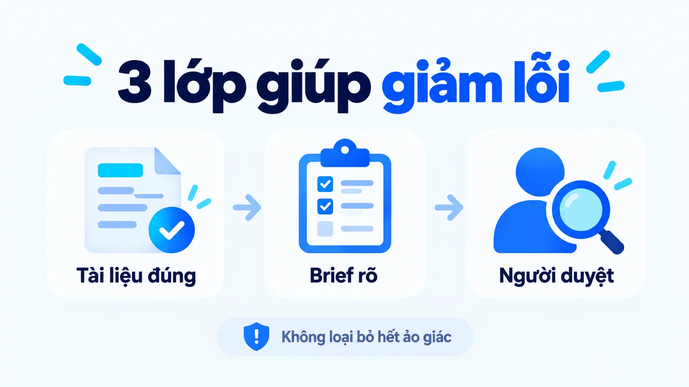
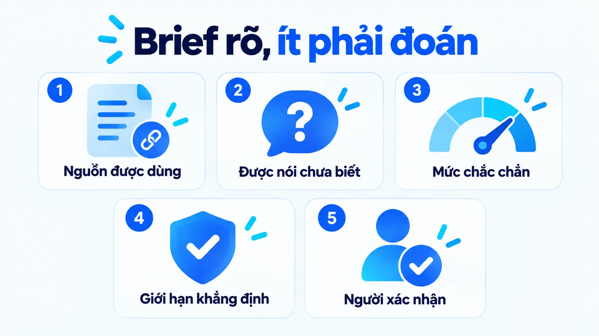
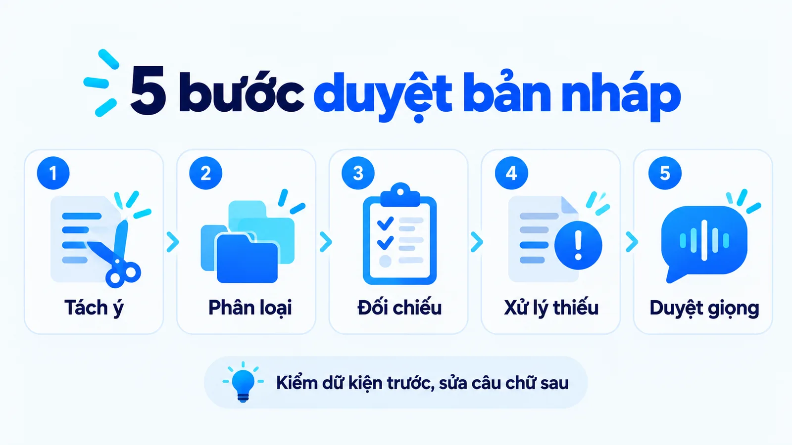
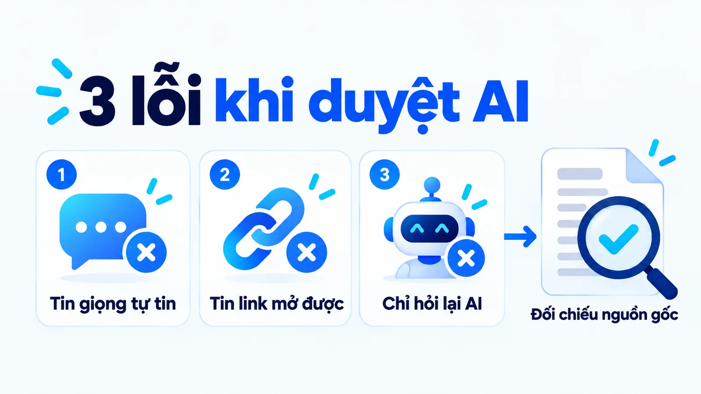

Ảo giác AI là gì? Nội dung trôi chảy vẫn có thể sai
Ảo giác AI là gì? Đó là hiện tượng hệ thống tạo ra thông tin nghe hợp lý nhưng sai, bịa đặt hoặc thiếu căn cứ. Trong marketing, lỗi thường nằm ở một con số, tên nghiên cứu, lời trích dẫn hay tính năng sản phẩm, và giọng văn tự tin không xác nhận chúng đúng. Tôi là Lê Tuấn Việt, Marketing Leader tại TAKI Group. Bài này trình bày cơ chế, số liệu đo được, một phán quyết có thật và quy trình năm bước duyệt bản nháp AI.
- Đăng ngày
- Cập nhật

Tóm tắt nhanh
- Ảo giác AI là đầu ra nghe hợp lý nhưng sai hoặc thiếu căn cứ. Với người làm marketing, rủi ro nằm ở số liệu, trích dẫn và thông tin sản phẩm.
- Nghiên cứu OpenAI công bố tháng 9 năm 2025 cho thấy cách huấn luyện và chấm điểm thưởng cho việc đoán, nên mô hình hiếm khi nói không biết.
- Nghiên cứu của Đại học Stanford năm 2024 đo tỷ lệ sai từ 69% đến 88% trong lĩnh vực pháp lý. Mô hình còn quá tự tin và hay coi tiền đề sai trong câu hỏi là đúng.
- Vụ Moffatt kiện Air Canada cho thấy doanh nghiệp chịu trách nhiệm về thông tin chatbot đưa ra. Quy trình năm bước giúp duyệt bản nháp AI: tách khẳng định, phân loại, kiểm chứng nguồn, xử lý phần thiếu, rồi mới sửa giọng.
Mục lục bài viết12 phần
Bản chất của ảo giác AI là gì?
Ảo giác AI (AI hallucination) là những trường hợp hệ thống AI tạo ra đầu ra nghe hợp lý nhưng sai sự thật, không liên quan hoặc bị bịa hoàn toàn, theo định nghĩa của IBM.
Trong phạm vi bài này, trọng tâm là dữ kiện trong nội dung AI Marketing, không phải toàn bộ loại lỗi của mọi hệ thống AI. Muốn xử lý AI hallucination trong marketing, bạn cần kiểm tra từng khẳng định có thể xác minh. Một bài có ý tưởng tốt vẫn có thể chứa dữ kiện sai; một đường dẫn mở được vẫn có thể không chứng minh điều bản nháp đang nói.
Ví dụ, AI ghi một nghiên cứu với tên tổ chức và năm công bố đầy đủ, nhưng không có tài liệu tương ứng. Hoặc nó gán một tính năng cho sản phẩm vì tính năng đó thường xuất hiện ở sản phẩm cùng nhóm. Câu vẫn đúng ngữ pháp, nhưng người đọc nhận một thông tin chưa được xác nhận.
Một đoạn dài dòng, sai giọng thương hiệu hoặc chọn góc khai thác chưa phù hợp cũng cần sửa, nhưng không nhất thiết là ảo giác về dữ kiện. Phân biệt loại lỗi giúp đội duyệt đúng việc: sửa giọng cần tiêu chí thương hiệu; kiểm chứng tính năng cần hồ sơ sản phẩm. Đọc tiếp bài Brand voice và tone of voice khác nhau thế nào để tách hai lớp đánh giá.
Vì sao mô hình đoán thay vì nói không biết?
Vì cách huấn luyện và cách chấm điểm hiện nay thưởng cho việc đoán và phạt việc thừa nhận chưa biết. Đây là kết luận trung tâm trong nghiên cứu Why Language Models Hallucinate do nhóm của Adam Kalai tại OpenAI cùng Santosh Vempala công bố ngày 5 tháng 9 năm 2025.
Bài thi trắc nghiệm không trừ điểm câu sai
Cơ chế rất dễ hiểu nếu hình dung một bài thi trắc nghiệm không trừ điểm câu sai. Trả lời đúng được một điểm. Đoán bừa mà trúng cũng được một điểm. Đoán bừa mà sai được không điểm. Và nói tôi không biết cũng được không điểm. Trong hệ thống chấm như vậy, chiến lược tối ưu là luôn đoán, vì thừa nhận chưa biết không bao giờ tốt hơn đoán.

Hai chiến lược có độ chính xác gần bằng nhau, tỷ lệ sai khác xa
Nhóm nghiên cứu đưa ra một so sánh cụ thể trên bộ đánh giá SimpleQA. Một mô hình từ chối trả lời 52% số câu, đạt 22% trả lời đúng và 26% trả lời sai. Một mô hình khác gần như không từ chối câu nào, chỉ 1%, đạt 24% trả lời đúng nhưng 75% trả lời sai.

Hãy đọc kỹ cặp số đó. Đổi từ chiến lược thận trọng sang chiến lược đoán gần như mọi câu chỉ mang lại thêm 2 điểm phần trăm về độ chính xác, trong khi tỷ lệ trả lời sai tăng gần gấp ba. Với một bảng xếp hạng chỉ nhìn vào độ chính xác, mô hình thứ hai trông tốt hơn. Với một đội nội dung phải chịu trách nhiệm về từng dữ kiện, mô hình thứ hai nguy hiểm hơn nhiều.
Điều này giải thích một trải nghiệm quen thuộc: AI hiếm khi nói không biết. Không phải vì nó giấu điều gì, mà vì nó chưa bao giờ được thưởng cho câu trả lời đó. Nhóm nghiên cứu đề xuất cách sửa ở tầng đánh giá: phạt nặng hơn với những câu sai được nói ra một cách chắc chắn, và cho điểm một phần khi mô hình thể hiện đúng mức độ không chắc chắn.
Với người làm nội dung, hệ quả thực tế rất rõ. Bạn không thể chờ mô hình tự nói phần nào nó không biết. Bạn phải chủ động cho phép nó nói điều đó trong cách giao việc, và phải tự kiểm tra phần còn lại.
Tỷ lệ sai thực tế cao tới mức nào?
Trong lĩnh vực pháp lý, một nghiên cứu độc lập đo được tỷ lệ từ 69% đến 88%. Con số này đến từ nhóm RegLab của Đại học Stanford, công bố ngày 11 tháng 1 năm 2024, sau khi thử hơn 200.000 truy vấn trên mỗi mô hình trong ba mô hình được khảo sát.

Cần đọc con số này đúng phạm vi. Pháp lý là lĩnh vực đòi hỏi trích dẫn chính xác từng vụ việc và từng điều khoản, nên tỷ lệ sai ở đây cao hơn nhiều so với các tác vụ thông thường. Bạn không nên mang tỷ lệ 88% sang cho việc viết mô tả sản phẩm. Điều đáng mang sang là hai đặc điểm mà nhóm nghiên cứu ghi nhận, vì hai đặc điểm đó không phụ thuộc lĩnh vực.
Quá tự tin bất kể đúng hay sai
Mô hình thể hiện cùng một mức chắc chắn cho câu trả lời đúng và câu trả lời sai, rõ nhất ở những tình huống phức tạp. Nghĩa là bạn không thể dùng giọng điệu của bản nháp làm tín hiệu để đoán phần nào cần kiểm tra.
Coi tiền đề trong câu hỏi là đúng
Đặc điểm này nguy hiểm hơn với người làm marketing: mô hình có xu hướng coi tiền đề trong câu hỏi là đúng. Nếu bạn hỏi vì sao sản phẩm X đạt chứng nhận Y, mô hình thường đi thẳng vào giải thích thay vì kiểm tra xem chứng nhận đó có tồn tại không.
Trong công việc nội dung, một lời yêu cầu như hãy chứng minh sản phẩm này tốt nhất đã đẩy bản nháp theo kết luận mong muốn ngay từ câu hỏi. Cách giao việc hữu ích hơn là yêu cầu nêu điều tài liệu hỗ trợ, phần chưa đủ căn cứ và câu hỏi còn cần làm rõ.
Tôi ưu tiên hỏi khẳng định này dựa vào đâu trước khi hỏi câu này đã đủ thuyết phục chưa. Nếu dữ kiện sai, viết lại hấp dẫn hơn chỉ khiến lỗi khó bị phát hiện hơn.
Sai một chi tiết có thể tốn bao nhiêu?
Đủ để ra tòa, và doanh nghiệp là bên chịu trách nhiệm chứ không phải nhà cung cấp công nghệ. Vụ Moffatt kiện Air Canada là ví dụ có phán quyết công khai, do Tòa Giải quyết Tranh chấp Dân sự British Columbia ra ngày 14 tháng 2 năm 2024.
Chatbot trên website Air Canada nói với một khách hàng rằng anh có thể mua vé trước rồi xin giảm giá vé tang lễ trong vòng chín mươi ngày, qua một biểu mẫu trực tuyến. Chính sách thật của hãng không cho phép xin hoàn tiền sau khi chuyến bay đã hoàn thành. Khách hàng làm theo lời chatbot, bị từ chối, và khởi kiện.
Air Canada đưa ra hai lập luận. Thứ nhất, thông tin đúng đã có ở một trang khác trên chính website của hãng. Thứ hai, và đây là lập luận đáng chú ý, hãng cho rằng chatbot là một thực thể pháp lý riêng biệt, tự chịu trách nhiệm cho hành động của mình.
Tòa bác cả hai. Chatbot được tích hợp vào website của hãng, nên hãng chịu trách nhiệm cho mọi thông tin xuất hiện ở đó. Về lập luận thứ nhất, tòa ghi rõ rằng không thể đòi hỏi người tiêu dùng phải đối chiếu thông tin ở một phần website với một phần khác của chính website đó. Air Canada phải bồi thường khoảng 650 đô la Canada cùng lãi và án phí.
Số tiền nhỏ. Nguyên tắc thì không. Nếu một câu sai do AI sinh ra xuất hiện trên tài sản số của bạn, bạn không thể đẩy trách nhiệm sang công cụ, và cũng không thể dựa vào lý do thông tin đúng nằm ở chỗ khác. Với một trang bán hàng ghi sai tính năng, hậu quả có thể là hoàn tiền hàng loạt chứ không phải một vụ kiện nhỏ.
Hệ thống tự động càng có nhiều quyền hành động thì phần trách nhiệm này càng lớn. Bài AI agent và chatbot khác nhau thế nào trong marketing chia quyền đó thành bốn mức để doanh nghiệp biết mình đang giao cho hệ thống điều gì.
Ba loại khẳng định cần chú ý khi viết marketing
Đừng chỉ tìm một dấu hiệu như đường dẫn lỗi. Một nguồn có thật cũng có thể bị đọc sai; một con số đúng ở nghiên cứu khác cũng có thể bị đưa vào bối cảnh không phù hợp.
| Nhóm cần kiểm tra | Lỗi có thể xảy ra | Căn cứ cần tìm |
|---|---|---|
| Số liệu | Có tỷ lệ nhưng thiếu mẫu, thời gian hoặc phạm vi | Báo cáo gốc và cách đo |
| Trích dẫn | Người có thật nhưng không nói câu được gán cho họ | Văn bản, bản ghi hoặc phát biểu gốc |
| Sản phẩm | Ghép tính năng của dòng khác vào sản phẩm đang viết | Hồ sơ đúng dòng và đúng phiên bản |

Tên người, chức danh, giá và chính sách cũng cần ngày đối chiếu vì có thể thay đổi. Không cần đoán lỗi đến từ giai đoạn huấn luyện nào mới sửa được bài. Trong sản xuất nội dung, việc cần làm trước là xác định khẳng định chưa đủ căn cứ và ngăn nó đi tới người đọc.
Ví dụ SME: bản mô tả ghế văn phòng thêm tính năng chưa có
Xét một cửa hàng nội thất thuộc nhóm SME (doanh nghiệp vừa và nhỏ) đang viết giới thiệu ghế văn phòng. Hồ sơ do cửa hàng cung cấp chỉ ghi vật liệu khung, kích thước và khả năng chỉnh chiều cao bằng tay. Bản nháp AI lại thêm tự động điều chỉnh theo dáng ngồi. Nếu đội chỉ duyệt câu chữ, tính năng chưa có căn cứ có thể đi vào trang bán hàng và tạo kỳ vọng sai.
Đây là ví dụ giả định
Cửa hàng nội thất này dùng để giải thích cách duyệt, không phải sản phẩm đã được tôi kiểm định hay hồ sơ một khách hàng thật.

Cách sửa là đối chiếu đúng dòng ghế với người phụ trách sản phẩm. Nếu hồ sơ chưa xác nhận tính năng tự động, bỏ khẳng định đó hoặc để thành câu hỏi cần xác minh trong bản nháp. Không biến chưa thấy trong tài liệu thành khẳng định chắc chắn rằng mọi phiên bản đều không có.
Đáng chú ý là kiểu lỗi này khớp đúng cơ chế đã nói ở trên. Ghế văn phòng cùng phân khúc thường có tính năng điều chỉnh tự động, nên đó là chi tiết hợp ngữ cảnh nhất để lấp vào chỗ trống. Mô hình không bịa ngẫu nhiên; nó điền thứ có xác suất cao nhất. Điều đó khiến lỗi trông hợp lý và khó bị bắt hơn một lỗi vô lý.
Đoạn viết lại có thể giải thích những thông số đã xác nhận và điều kiện người mua cần cân nhắc. Một góc nội dung tốt vẫn có thể nói về sự phù hợp với không gian hoặc cách chọn kích thước, miễn là có thông tin đúng. Đọc tiếp bài Content angle là gì để hiểu cách đổi góc mà không tự thêm dữ kiện.
Kiểm chứng nguồn: mở được đường dẫn đã đủ chưa?
Chưa đủ. Hướng dẫn giảm ảo giác của Anthropic đề xuất gắn khẳng định với đoạn nguồn và cho phép mô hình nêu sự không chắc chắn. Với người biên tập, đây là cách biến một lời khẳng định thành thứ có thể kiểm tra.
Bạn nên tách một câu nhiều ý thành các mệnh đề cụ thể. Nếu bản nháp ghi một công cụ vừa tự động hóa vừa tăng doanh thu vừa phù hợp mọi SME, mỗi phần cần căn cứ riêng. Một trang giới thiệu chức năng không tự chứng minh hiệu quả doanh thu của mọi doanh nghiệp.
Sau đó chạy bốn lớp kiểm chứng, theo thứ tự, dừng ở lớp đầu tiên không có câu trả lời chắc chắn.

- Nguồn có tồn tại không? Đây là lớp đầu tiên, và cũng là lớp duy nhất mà việc mở được đường dẫn trả lời được.
- Có đúng tổ chức không? Tên cơ quan công bố hay bị gán nhầm.
- Tài liệu có thật sự nói điều bản nháp đang gán không? Nhiều khi nó chỉ nói về một chủ đề gần giống.
- Bản nháp có giữ nguyên điều kiện của nguồn không? Đây là lớp khó phát hiện nhất.
Lớp bốn khó phát hiện vì nguồn hoàn toàn có thật và người duyệt dễ cho qua. Có thể giúp và luôn giúp khác nhau. Nghiên cứu trên 200 doanh nghiệp ở Mỹ không mặc nhiên áp dụng cho khách hàng tại Việt Nam. Một nghiên cứu công bố năm 2019 không nên được gọi là nghiên cứu mới nhất.
Với số liệu, xem thời gian, mẫu nghiên cứu, định nghĩa chỉ số và phạm vi. Nếu chưa đọc được tài liệu gốc, ghi trạng thái chưa xác minh; đừng chuyển một đoạn trích tìm kiếm thành chứng nhận. Nguyên tắc không kết luận vượt quá dữ liệu cũng là trọng tâm của bài Dark social là gì, nơi direct traffic được đọc kèm phạm vi và giới hạn của số liệu.
Phân biệt ví dụ minh họa với sự kiện có thật
Ví dụ minh họa nêu rõ là giả định vẫn dùng được, còn sự kiện có thật thì cần bằng chứng. AI có thể hỗ trợ dựng một cửa hàng, khách hàng hoặc tình huống để giải thích cơ chế. Khi được nêu rõ là giả định, ví dụ đó có vai trò giúp người đọc hình dung. Vấn đề xảy ra khi bản nháp biến tình huống dựng thành chiến dịch thật hoặc kết quả đã đo.
Ví dụ ghế văn phòng phía trên không cần có tên khách thật hay tỷ lệ tăng chuyển đổi để hữu ích. Nó chỉ cần thông tin đầu vào, khẳng định được thêm và cách đối chiếu rõ ràng. Nếu viết khách hàng của tôi đã tăng doanh thu sau khi sửa, bài đã chuyển sang một bằng chứng trải nghiệm cần xác nhận riêng.
Bạn cũng cần giữ ranh giới khi làm hình. Một biểu đồ minh họa không nên nhìn như báo cáo của thương hiệu nếu không có dữ liệu. Nhãn ví dụ giả định phải xuất hiện ở phần người đọc thấy được, không chỉ nằm trong ghi chú của đội sản xuất.
Giảm lỗi bằng tài liệu, cách giao việc và người duyệt
Tài liệu đúng phiên bản giúp AI có căn cứ tốt hơn. IBM giải thích RAG (retrieval-augmented generation) là cách kết nối mô hình với kho thông tin được truy xuất khi trả lời. Nhưng có kho dữ liệu chưa đủ: lấy nhầm đoạn hoặc dùng tài liệu cũ vẫn cần được phát hiện khi đối chiếu.

Trong brief, hãy chỉ rõ nguồn được dùng và cho phép ghi chưa đủ dữ liệu. Anthropic cũng lưu ý các kỹ thuật giảm lỗi không loại bỏ hoàn toàn ảo giác. Vì vậy, không coi một prompt tốt hoặc một lần AI tự kiểm tra là giấy bảo đảm cho nội dung công khai.
Năm dòng dưới đây là phần đáng thêm vào brief, và chúng nối thẳng với cơ chế đã nói ở đầu bài: nếu mô hình chỉ đoán vì chưa bao giờ được thưởng cho câu nói không biết, thì việc cho phép nó nói câu đó phải nằm ngay trong đề bài.
- Nguồn được dùng: liệt kê tài liệu mà AI được phép dựa vào.
- Được nói chưa biết: cho phép ghi chưa đủ dữ liệu thay vì tự điền.
- Mức chắc chắn: yêu cầu nêu mức chắc chắn của từng khẳng định.
- Giới hạn khẳng định: yêu cầu giữ đúng điều kiện và phạm vi của nguồn.
- Người xác nhận: chỉ rõ ai kiểm tra từng loại khẳng định trước khi đăng.

Người duyệt cần biết tài liệu nào có thẩm quyền cho từng loại khẳng định. Đội sản phẩm xác nhận thông số; người đọc báo cáo kiểm tra mẫu và cách đo; người biên tập giữ giọng và ngữ cảnh. Người duyệt cần thấy gì và được quyền làm gì được phân tích trong bài Human-in-the-loop là gì.
Duyệt một bản nháp AI theo quy trình nào?
Chạy năm bước theo đúng thứ tự dưới đây. Thứ tự quan trọng hơn kỹ năng viết, vì sửa câu chữ trước khi kiểm dữ kiện chỉ làm một khẳng định sai trở nên thuyết phục hơn.

Bước 1: Tách khẳng định
Chia mọi câu nhiều ý thành từng mệnh đề kiểm tra được riêng.
Bước 2: Phân loại từng mệnh đề
Xếp mỗi mệnh đề vào một trong ba nhóm số liệu, trích dẫn hoặc thông tin sản phẩm, vì mỗi nhóm có một loại căn cứ khác nhau.
Bước 3: Kiểm chứng nguồn bằng bốn lớp
Chạy bốn lớp kiểm chứng nguồn và ghi trạng thái cho từng mệnh đề, gồm cả trạng thái chưa xác minh.
Bước 4: Xử lý phần thiếu
Có ba lựa chọn: bỏ hẳn, hạ mức khẳng định cho khớp bằng chứng, hoặc chuyển thành một câu hỏi cần xác minh gửi người có thẩm quyền. Nếu một số liệu là nền cho kết luận, kết luận đó cũng phải được xem lại khi số liệu bị loại.
Bước 5: Duyệt giọng văn và cách diễn đạt
Chỉ đến lúc này mới duyệt giọng văn và cách diễn đạt, vì khi dữ kiện đã ổn thì việc làm câu chữ thuyết phục hơn mới an toàn.
Ba lỗi dưới đây là những lỗi hay gặp nhất ở bước duyệt, và cả ba đều xuất phát từ việc nhầm một tín hiệu dễ thấy với bằng chứng thật.
- Tin giọng tự tin: mô hình thể hiện cùng một mức chắc chắn cho câu đúng và câu sai, nên giọng điệu không cho biết phần nào cần kiểm tra.
- Tin link mở được: mở được đường dẫn mới chỉ là lớp kiểm chứng đầu tiên, nguồn có thật vẫn có thể bị đọc sai.
- Chỉ hỏi lại AI: cùng một cơ chế sinh ra lỗi cũng có thể bỏ sót lỗi đó, nên cần đối chiếu nguồn gốc.

Câu hỏi thường gặp về ảo giác AI
Ảo giác AI là gì và có phải mọi lỗi của AI đều là ảo giác không?
Ảo giác AI là đầu ra nghe hợp lý nhưng sai hoặc bịa đặt. Không phải lỗi nào cũng thuộc loại này: một đoạn dài dòng, sai giọng thương hiệu hoặc chọn góc khai thác chưa phù hợp cần sửa, nhưng không nhất thiết là ảo giác về dữ kiện. Phân biệt như vậy giúp đội duyệt đúng việc.
Yêu cầu AI dẫn nguồn có ngăn hết ảo giác không?
Không. Nguồn và mối liên hệ giữa nguồn với khẳng định vẫn cần kiểm tra. Một danh sách link dài không tự chứng minh bài đã có căn cứ, vì nguồn có thật vẫn có thể bị đọc sai hoặc bị lược bỏ điều kiện.
AI trả lời giống nhau nhiều lần có nghĩa là đúng không?
Không. Tính nhất quán của đầu ra khác với độ đúng của dữ kiện. Nghiên cứu của Stanford còn ghi nhận mô hình thể hiện cùng một mức tự tin bất kể câu trả lời đúng hay sai, nên giọng điệu cũng không phải tín hiệu đáng tin.
Có cần bỏ toàn bộ bản nháp khi thấy một lỗi không?
Không nhất thiết. Tách phần dùng được với khẳng định cần sửa, rồi kiểm tra các phần có liên quan. Nếu một số liệu là nền cho kết luận, kết luận đó cũng phải được xem lại.
Mô hình mới hơn có hết ảo giác không?
Không, nhưng có thể chọn chiến lược khác. Trong so sánh của OpenAI, một mô hình từ chối trả lời 52% số câu có tỷ lệ sai 26%, trong khi mô hình gần như luôn trả lời có tỷ lệ sai 75%. Độ chính xác của hai mô hình gần bằng nhau.
Doanh nghiệp có phải chịu trách nhiệm cho câu trả lời sai của chatbot không?
Trong vụ Moffatt kiện Air Canada, tòa ở British Columbia trả lời là có. Hãng bị buộc bồi thường, và lập luận rằng chatbot là một thực thể pháp lý riêng biệt đã bị bác. Đây là phán quyết ở Canada, không phải án lệ tại Việt Nam, nhưng nguyên tắc trách nhiệm thì đáng để cân nhắc.
Có nên dùng AI để tự kiểm tra bản nháp do AI viết không?
Có thể dùng như một bước sàng lọc, không dùng như bước duyệt cuối. Cùng một cơ chế sinh ra lỗi cũng có thể bỏ sót lỗi đó. Người duyệt cần đối chiếu với tài liệu có thẩm quyền, không chỉ hỏi lại mô hình.
Kết luận: ảo giác AI là gì và việc cần làm tiếp theo
Tóm lại, ảo giác AI là gì với người làm marketing? Đó là câu trả lời nghe hợp lý nhưng chưa có căn cứ. Một bản nháp đáng dùng là bản có thể đối chiếu và biên tập.
Khi AI bịa thông tin khi viết content, điều quan trọng là giữ ranh giới giữa điều đã xác nhận, điều đang suy luận và điều chưa biết trước khi xuất bản.